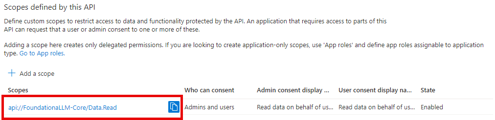

Core API and User Portal authentication setup: Microsoft Entra ID
FoundationaLLM comes with out-of-the-box support for Microsoft Entra ID authentication. This means that you can use your Microsoft Entra ID account to log in to the chat interface.
Create the Microsoft Entra ID applications
To enable Microsoft Entra ID authentication for the Core API and user portal, you need to create two applications in the Microsoft Azure portal:
- A client application that will be used by the user portal chat interface to authenticate users.
- An API application that will be used by the Core API to authenticate users.
Create the client application
Register the client application in the Microsoft Entra ID admin center
Sign in to the Microsoft Entra ID admin center as at least a Cloud Application Administrator.
Browse to Identity > Applications > App registrations.

On the page that appears, select + New registration.
When the Register an application page appears, enter the following name for your application FoundationaLLM-User-Portal.
Under Supported account types, select Accounts in this organizational directory only.
Select Register.

The application's Overview pane displays upon successful registration. Record the Application (client) ID and Directory (tenant) ID to add to your App Configuration settings later.

Add a redirect URI to the client application
Under Manage, select Authentication.
Under Platform configurations, select Add a platform. In the pane that opens, select Single-page application. This is for the Vue.js chat application.
Add a Redirect URI under Single-page application for your deployed Vue.js application. Enter
<YOUR_CHAT_APP_URL>/signin-oidc, replacing<YOUR_CHAT_APP_URL>with the chat UI application URL obtained in the Pre-requisites section above. For example, it should look something likehttps://d85a09ce067141d5807a.eastus.aksapp.io/signin-oidcfor an AKS deployment, orhttps://fllmaca002chatuica.graybush-c554b849.eastus.azurecontainerapps.io/signin-oidcfor an ACA deployment.Add a Redirect URI under Single-page application for local development of the Vue.js application:
http://localhost:3000/signin-oidc.
If you wish to configure authentication in Postman for executing calls against the Core API, you will need to add a Redirect URI under Mobile and desktop applications for Postman. Enter https://oauth.pstmn.io/v1/callback for the URI. To do this, complete the following steps:
Under Platform configurations, select Add a platform. In the pane that opens, select Mobile and desktop applications.
Enter
https://oauth.pstmn.io/v1/callbackfor the Custom redirect URIs value.
Select Configure to apply the changes.
Implicit grant and hybrid flows for the client application
Check Access tokens and ID tokens under Implicit grant.
Select Configure to apply the changes (if the button is present).
Select Save at the bottom of the page to save the changes.

Update the client application manifest
Under Manage, select Manifest.
Locate the
accessTokenAcceptedVersionproperty and set its value to2.
Select Save at the top of the page to save the changes.
Create the API application
Register the API application in the Microsoft Entra ID admin center
Return to the Microsoft Entra ID admin center.
Browse to Identity > Applications > App registrations and select + New registration.
For Name, enter the name FoundationaLLM-Core-API for the application.
Under Supported account types, select Accounts in this organizational directory only.
Select Register.

The application's Overview pane displays upon successful registration. Record the Application (client) ID and Directory (tenant) ID to add to your App Configuration settings later.

Implicit grant and hybrid flows for the API application
Select Authentication under Manage in the left-hand menu.
Select + Add a platform under Platform configurations. In the pane that opens, select Web.
Under "Redirect URIs", enter
http://localhostand select Configure. Please note that this value is not used in the FoundationaLLM solution, but is required in order to be able to select the access and ID tokens in the next step.
Check Access tokens and ID tokens under Implicit grant.
Select Configure to apply the changes.
Select Save at the bottom of the page to save the changes.
Expose an API for the API application
Under Manage, select Expose an API > Add a scope. For Application ID URI, make sure to use
api://FoundationaLLM-Core, then enter the following details:- Scope name:
Data.Read - Who can consent?: Admins and users
- Admin consent display name:
Read data on behalf of users - Admin consent description:
Allows the app to read data on behalf of the signed-in user. - User consent display name:
Read data on behalf of the user - User consent description:
Allows the app to read data on behalf of the signed-in user. - State: Enabled
- Scope name:
Select Add scope to complete the scope addition.

Copy the Scope name value to add to your App Configuration settings later. For example, it should look something like
api://FoundationaLLM-Core/Data.Read.
Add authorized client application
While still in the Expose an API section, select + Add a client application.
Paste the Application (client) ID of the client application that you created earlier.
Check the
Data.Readauthorized scope that you created.Select Add application to complete the client application addition.

Update the API application manifest
Under Manage, select Manifest.
Locate the
accessTokenAcceptedVersionproperty and set its value to2.Select Save at the top of the page to save the changes.
Add API permissions for the client application
Browse to Identity > Applications > App registrations.
Select the
FoundationaLLM-Clientapplication that you created earlier.Select API permissions.
Select + Add a permission under the "Configured permissions" section.
In the "Request API permissions" pan, select the My APIs tab, then select the
FoundationaLLMAPI application.
Select the
Data.Readscope that you created earlier, then select Add permissions.
The client application's configured permissions should now look like the following:

Update App Configuration settings
Sign in to the Azure portal as at least a Contributor.
Navigate to the resource group that was created as part of the deployment.
Select the App Configuration resource and select Configuration explorer to view the values.
Enter
entrain the search box to filter the results.Check the box next to Key in the header to select all items.
Select Edit to open a JSON editor for the selected items.

Replace the values for the following settings with the values that you recorded earlier:
FoundationaLLM:Chat:Entra:ClientId: The Application (client) ID of the client application that you created earlier.FoundationaLLM:Chat:Entra:Scopes: The fully-qualified scopes path for the API application that you created earlier. For example, it should look something likeapi://FoundationaLLM-Core/Data.Read.FoundationaLLM:Chat:Entra:TenantId: The Directory (tenant) ID of the client application that you created earlier.FoundationaLLM:CoreAPI:Entra:ClientId: The Application (client) ID of the API application that you created earlier.FoundationaLLM:CoreAPI:Entra:TenantId: The Directory (tenant) ID of the API application that you created earlier.
Validate the following values while reviewing the settings:
FoundationaLLM:Chat:Entra:CallbackPath: Should be/signin-oidc.FoundationaLLM:Chat:Entra:Instance: Should behttps://login.microsoftonline.com/.FoundationaLLM:CoreAPI:Entra:CallbackPath: Should be/signin-oidc.FoundationaLLM:CoreAPI:Entra:Instance: Should behttps://login.microsoftonline.com/.FoundationaLLM:CoreAPI:Entra:Scopes: Should beData.Read.
Select Apply to save the changes.
Next steps
Now that Entra authentication is fully configured, restart the Core API and chat applications to apply the changes. Navigate to your chat application or refresh the page if it is already open. It should automatically prompt you to sign in with your Microsoft Entra ID account.
Restart Core API and Chat UI applications in an ACA Deployment
To restart the Core API and Chat applications in an Azure Container Apps (ACA) deployment, you will need to navigate to the Core API and Chat applications and restart their container revisions, as indicated in the following Azure Portal screenshot:

- From the
Revisionsblade in the left navigation panel of the Core API or Chat UI container app detail page in Azure Portal, select the name of the running revision. - A dialog panel titled
Revision detailsshould appear on the right side of the browser with aRestartbutton at the top. Select theRestartbutton to restart the running container.
Restarting in this manner will need to be performed for both the Core API container app and the Chat UI container app.
Restart Core API and Chat UI applications in an AKS Deployment
To restart the Core API and Chat applications in an Azure Kubernetes Service (AKS) deployment, you will need to navigate to the AKS detail page in Azure Portal and perform the following:
- Select the
Workloadsblade from the left navigation panel. - Select the
Podstab from theWorkloadsdetail page. - Select the Core API and Chat UI pods from the list (it helps if you select
defaultin theFilter by namespacedropdown first). - Select the
Deletebutton to terminate the currently running pods. New pods will be instantiated to take their place.